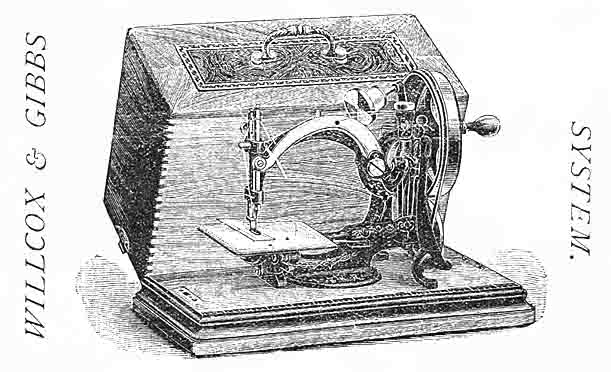
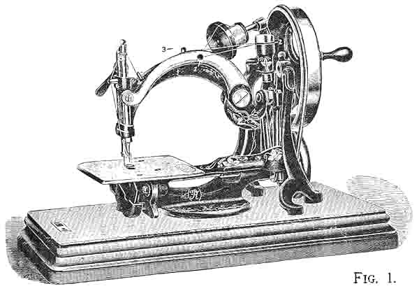
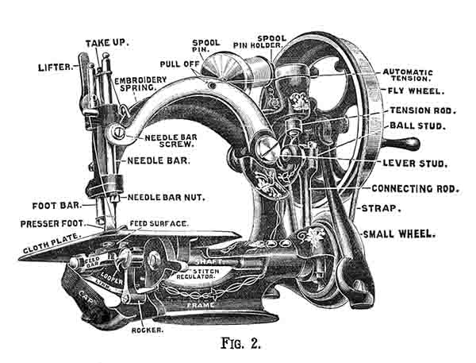
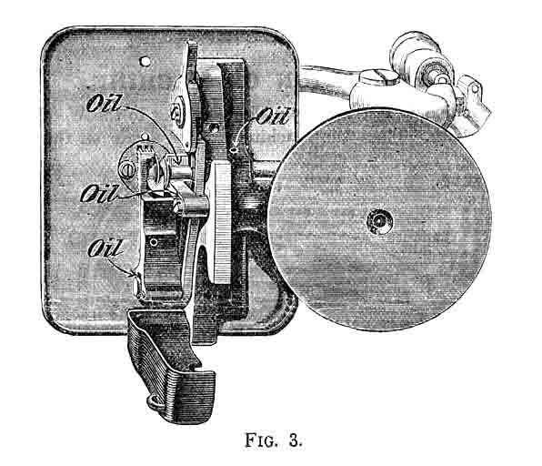
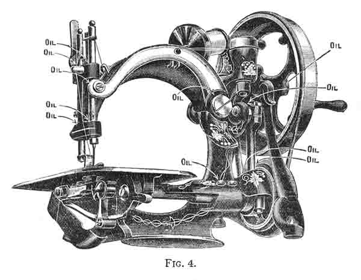

I N S T R U C T I O N S
FOR THE USE OF
FRISTER AND ROSSMANN'S
Automatic Chainstitch
Sewing Machines
PART ONE

THE
SEWING MACHINE MANUFACTURING CO.,
LATE
FRISTER AND ROSSMANN,
S. LOEWE, Sole Agent
49 Fore Street, London, E.C.
I N D E X
_._._._._._._._._
DIRECTIONS FOR USING THE MACHINE
| Description of Machine | 1 | Selecting Cotton or Silk | 7 |
| Notes and Cautions about Oiling | 2 | The Automatic Tension | 7 |
| Places to be Oiled | 2 | To Place the Work and Begin Sewing | 7 |
| Setting the Needle | 3 | To Fasten off Seam and Take Out Work | 8 |
| To Take Out the Needle | 5 | To Take Out Seam | 9 |
| To Tighten the Strap | 5 | To Turn a Corner | 9 |
| To Thread the Machine | 5 | Accidents to the Machine | 9 |
| To Regulate Length of Stitch to Size of Thread | 6 |
DIRECTIONS FOR USING THE ACCESSORIES
| List of Accessories | 09 | Narrow Hemmer | 14 |
| The Guide | 10 | To Make Hem and Sew on Trimming at the Same Time | 15 |
| To Braid | 11 | The Feller and Wide Hemmer | 16 |
| The Quilter | 11 | To Make a Wide Hem | 16 |
| The Gatherer | 12 | To Make a Felled Seam | 16 |
| To Gather and Sew on Band at the Same Time | 13 | Hints for Beginners .................Inside Cover | |
| To Embroider | 13 |
_._._._._._._._._
SPECIAL NOTICE
Perfect sewing is always secured by suing appropriate size of needle and thread for the length of stitch employed, as shown by the Table on the Cloth Plate (see page 6).

R E P A I R S
All our Machines are thoroughly tested before being sent to Customers, so that, with fair usage, they do not need any attention for years.
However, in the event of the Machines requiring repairs through accident or want of knowledge, it is essential that they should get into proper hands, and therefore we employ a staff of skilled mechanics at our depot in London.
Besides, all the parts of our Machines are interchangeable, and are always kept in stock, so that repairs are executed by us in the most efficient manner, and at the lowest cost.
On receiving one clear day's notice, an instructress will attend at Customer's House, free of charge - Customer paying Second Class Return Fare.
In making appointments for instruction, please give one clear day's notice, and mention nearest railway station.
Instructions for Use
OF
FRISTER & ROSSMANN'S
WILLCOX & GIBBS SYSTEM
SEWING MACHINES
The Machine is fastened, by a Thumb Screw to the Wooden Base, from underneath. Place the Machine exactly square on the Base, so

the strap connecting the small Wheel and Fly Wheel may work correctly.
Fig. 2 shows the principal parts of the Machine, to which reference is made through the course of these directions.
NOTES AND CAUTIONS ABOUT OILING
When only used occasionally, the Machine should be oiled and wiped. If in constant use it should be oiled every day.
The Oil supplied by us and by our Agents is the best oil for the sewing machine. It has the highest lubricating power; it never thickens, hence it does not clog the Machine, but keeps it in readiness for immediate working.

Should the Machine run hard, from long disuse and neglect, apply a little benzine instead of oil, and after working until it runs freely, wipe the Machine and again apply oil.
The Machine should be covered when not in use.
Never put oil in or about the Automatic Tension.
PLACES TO BE OILED
The Shaft, where it passes through the Frame (oil hole).
Eccentric, which operates Feed Bar. Fig. 3
Lower end of Rocker. Fig. 3
Feed Bar stud and slot at back end of Feed Bar. Fig. 3
Needle Bar (two places) and Foot Bar (two places) above each bearing. Fig. 4
Needle Bar screw. Fig. 4
Shaft (oil hole). Fig. 4
Hub of Large Wheel (oil hole). Fig. 4

Lower end of Connecting Rod (oil hole). Fig. 4
Lower end of Tension Rod (oil hole). Fig. 4
Upper end of Connecting Rod (oil hole). Fig. 4
Run the Machine rapidly for a few moments, to work the oil into the bearings, taking care to raise the Presser Foot.
Carefully wipe the superfluous oil from every part of the Machine.
Part Two
| Part Three | Part
Four | Part Five